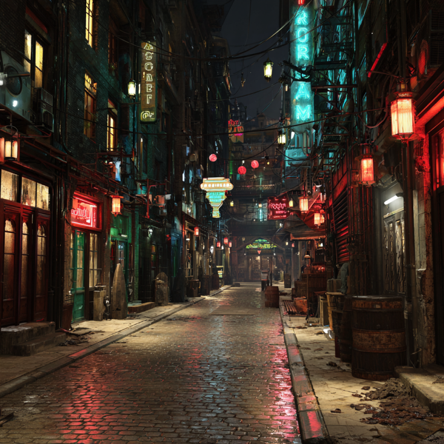

繁華街が、笑いながら黙った。
王都の夜は、普通ならもっと騒がしい。殴り合いも、刃傷沙汰も、酒場の喧嘩も、いちいち大事にしない。大事にしないことで回っている街だ。
ところが今週、歓楽街は妙に静かだ。声が低い。笑いが短い。店の奥が閉まるのが早い。用心棒の数だけが増えていく。
理由は一つの事件に集約されている。
鉄人会直系・極楽会の若頭――“歓楽街の王”と呼ばれる人物が、襲撃を受けたという噂だ。

今回、確度の高い情報は多くない。むしろ少ない。
そして王都では、この手の事件に限って「少ないこと」が一番雄弁だ。
分かっているとされるのは、次の程度である。
王都では、誰かが倒れた時より、「倒れたかどうかを街が語らない時」の方が危ない。
別言語の話が出た瞬間、世間が飛びつく説明がある。
王都には近年、外部勢力が流入しているからだ。
極東の大国トンファから流れてきたマフィア。
南西の砂漠地帯の部族由来で、難民の互助を隠れ蓑にしたマフィア。
これらが夜の利権に触れ始めた、という話は前からあった。
だから「外国語を話していた」という一文だけで、事件はそれらに接続される。
表向きの理解としては、最も安全で、最も角が立たない。
――外から来た連中とのいざこざだろう。
――縄張りの調整が上手くいかなかったのだろう。
――歓楽街の利権は狙われるのだろう。
こう言っておけば、とりあえずは“収まる”。少なくとも、口にしやすい。
だが、王都の裏が本当にざわついている理由は、別のところにある。
外から来た勢力が、歓楽街の王に手を出した。
それが本当なら、本来はもっと派手に血が出る。
見せしめが必要だからだ。恐怖を撒いて、周囲に踏み絵を踏ませるには、分かりやすさが要る。
ところが今回、街は静かだ。
静かなのに、用心棒だけが増えている。
店が閉まるのが早い。人が一歩奥へ引く。
これは、見せしめの空気ではない。
「次に備える」空気だ。
つまり、今の街は、まだ何も終わっていない前提で動いている。
ここから先は、誰もが言うのに、誰も紙に書きたがらない領域だ。
だから本誌も、固有名詞の扱いは慎重にする。王都では、活字が刃になることがある。
鉄人会が何かを起こした時、あるいは鉄人会に何かが起きた時、
「地元の古参」を思い出す者がいる。南西の筋。地場の顔。縄張りの番人。――そういう符牒で呼ばれる一派だ。
ここで名前を出すのは簡単だ。だが、簡単な行為ほど危険である。
ただし、なぜ連想されるのかは説明できる。
過去に、地元の運営と鉄人会の介入が衝突したとされる案件が積み重なっている。オルステッド村封印ダンジョン事件、スアリッジホテル事件、羅睺星事件――いずれも「確定」ではなく噂の領域に属するが、噂としては十分に“筋”を持っている。
それらが積もった結果、事件が起きるたび、証拠より先に因縁が語られる。
つまり今回も、外部勢力の話が表に出る一方で、裏ではこう囁かれる。
繰り返しますが、これは邪推である。
ただ、邪推が出るほど街が黙っている、という事実がある。
現時点で確実に言えるのは、歓楽街が「平常運転」を装っていることと、その装いの裏側で人の動きが変わっていることだけだ。
そして王都では、動きが変わる時、次に変わるのは相場である。
ひとつ目の未来は、表向きの筋書き通りに進む。外部マフィアとの衝突が前面化し、小競り合いが増える。市民は「治安が悪い」と言い、店は用心棒を増やし、夜の値段が上がる。
ふたつ目は、鉄人会側の“整備”が先に来る。歓楽街は一度締め上げられ、弱い店から消える。これは騒がしくない。だが静かに人が減る。
三つ目は、誰も名指しできない因縁が表面化する。外部勢力の件を口実に、過去の未清算まで含めて清算が始まる。これが一番長引き、一番後味が悪い。
今の街のピリピリは、たぶん三つ目の匂いに近い。
まだ誰も断定しない。断定できない。だから黙る。
黙るのに、備える。
歓楽街は、笑いながら黙った。
次に笑いが戻るのか、それとも笑いが別の店に移るだけなのか――。
王都の夜は今、その分かれ目に立っている。